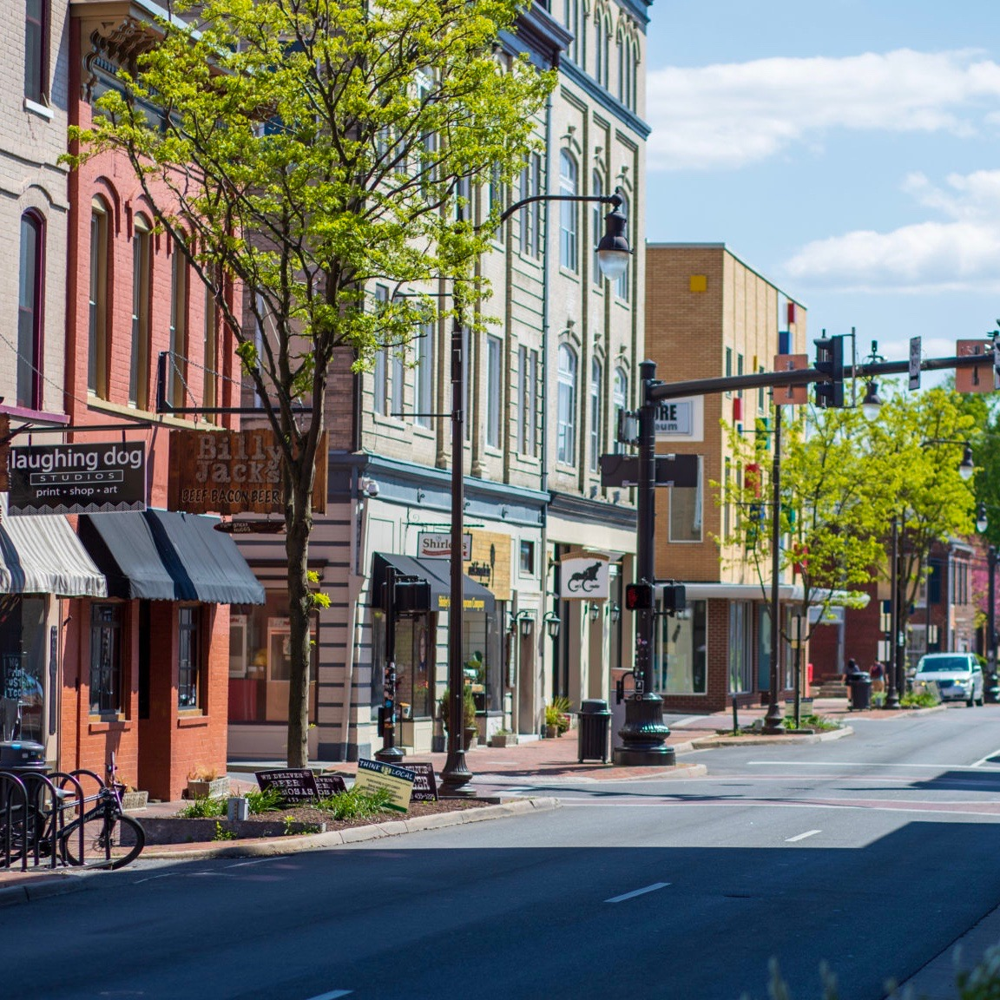
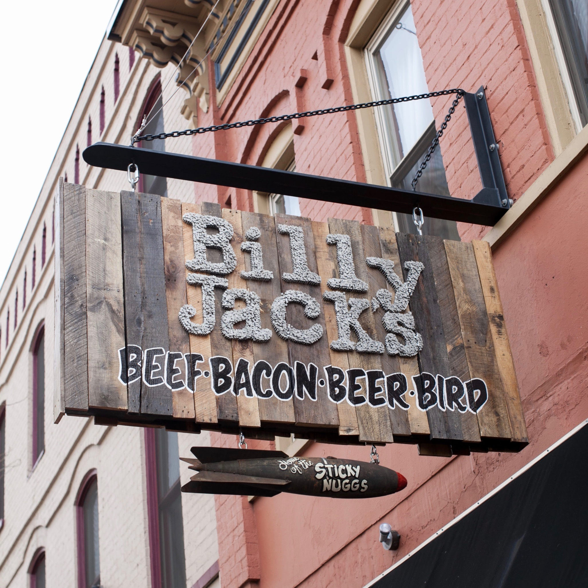
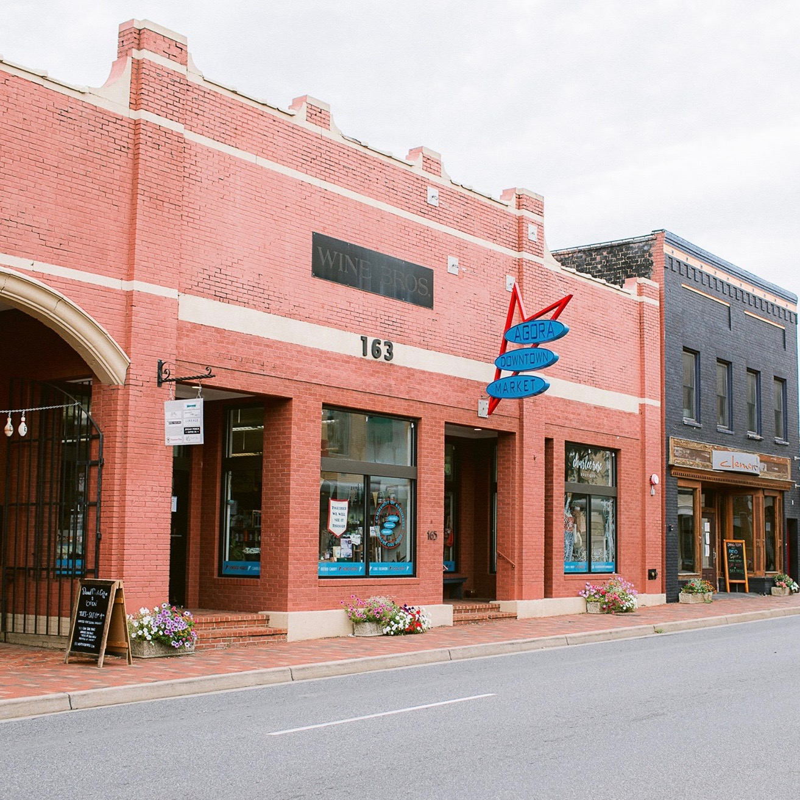
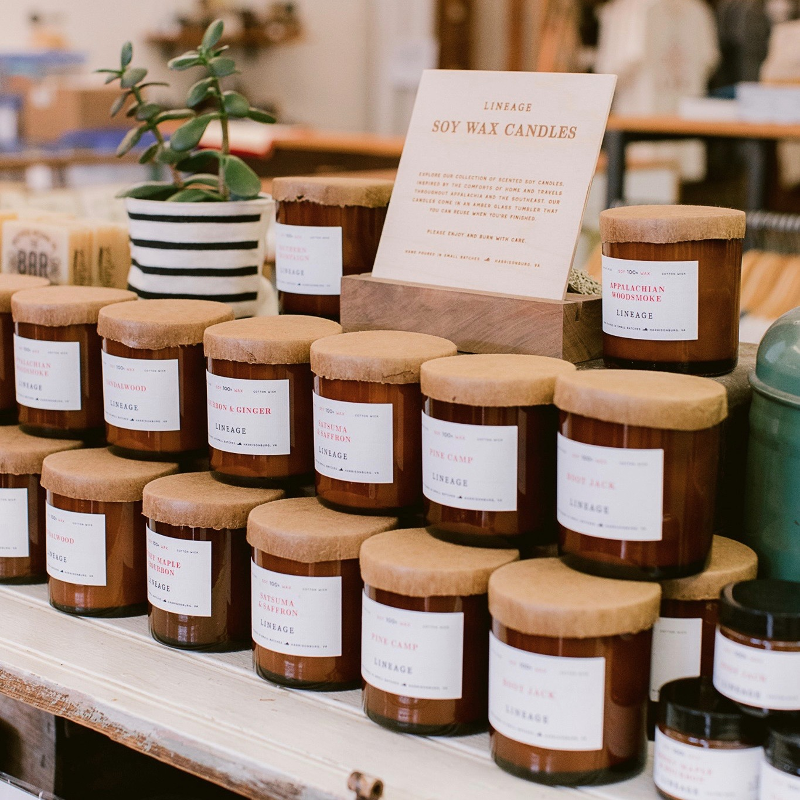
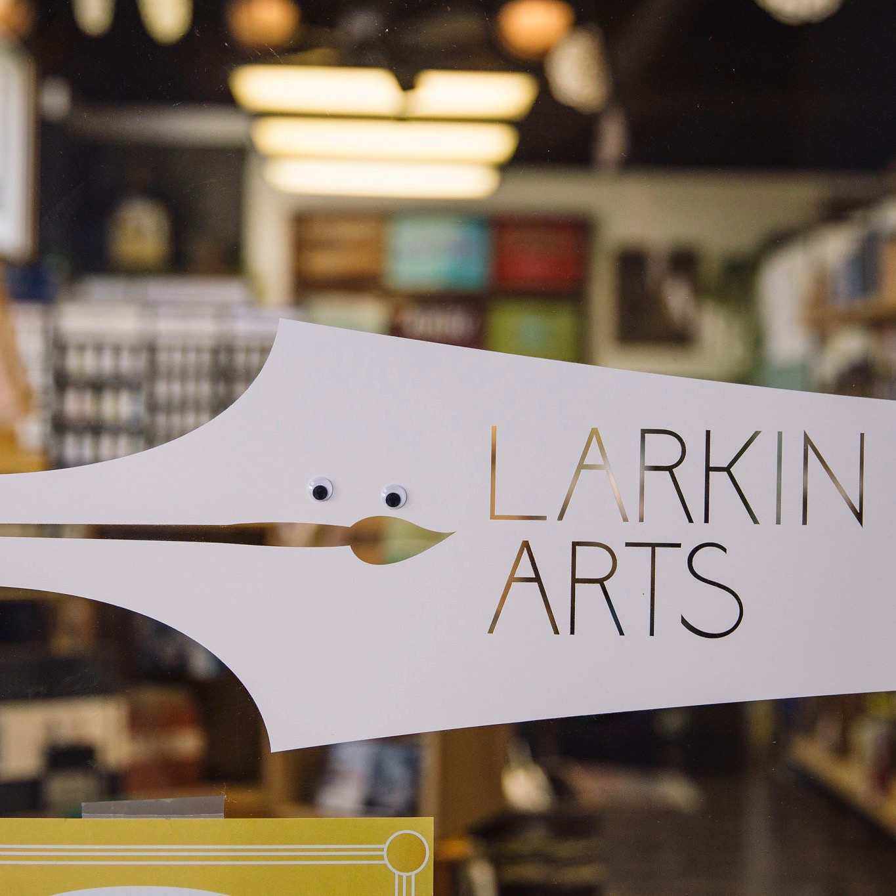
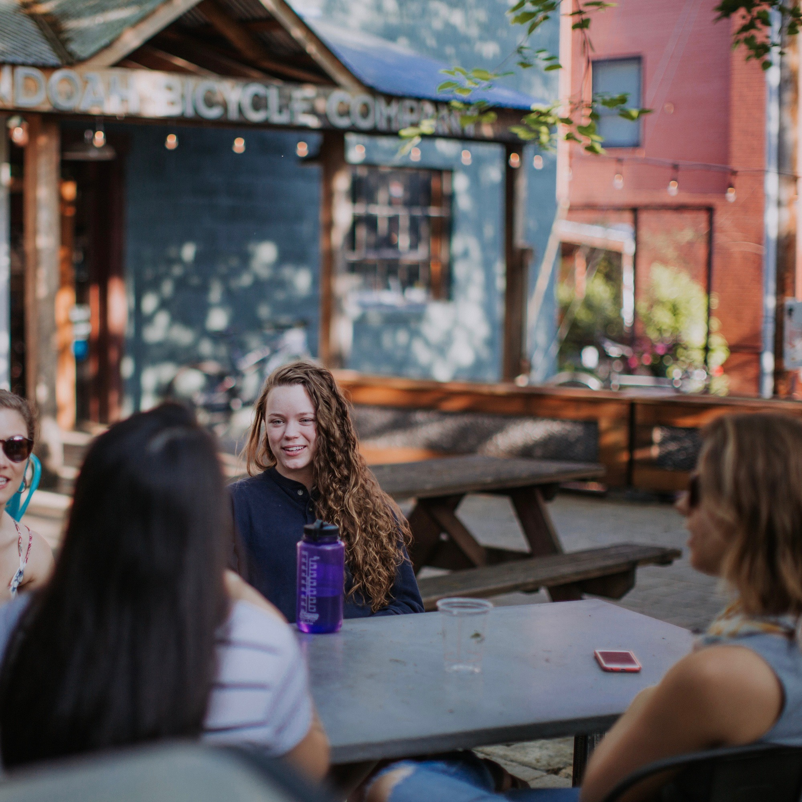

Exploring downtown Harrisonburg...
South Main Street
Harrisonburg boasts a vibrant and historical downtown, full of culture and art, and tasty food! Visitors are able to easily explore the 40-block downtown district on foot or by car.
Here, in the city of Harrisonburg, supporting the community and shopping local are the norm, so make sure to check out some of the locally-owned stores. Many one-of a-kind museums and art galleries call downtown home, so be sure to visit them!
South Main Street holds some of the best stores and restaurants in the downtown district. It is not a street you want to miss! Have brunch at Clementines or shop at The Yellow Button.

South Main Street runs along through the center of the downtown area and is lined by shops and restaurants.

Established in 2011, Billy Jack's has become a staple in the city's
foodie scene.
The Food Scene
With endless cusines and options available in the downtown area, there is something for everyone. Whether you are craving artisanal fire-oven pizzas, Indonesian "spiced sesame salmon," an authentic cuban sandwich, or a good ole American burger, downtown Harrisonburg has it all!
A local favorite, Billy Jack's, takes a innovative spin on American classics. Try the Chuck Norris slider or the Book 'Em Dano burger. If you are looking for something sweet, check out Bella Luna Gelato and Pastries.
Agora Downtown Market
Harrisonburg supports shopping local, something that Agora makes easy with its collection of small, local businesses under one roof in the center of the downtown district. Some products sold at this retail community are handmade bags, fair-trade goods, zero-waste products, and clothing and vintage items.
Agora Downtown Market Stores: Bring Your Own, Broad Porch Coffee Co., Charlee Rose Boutique, Heartworn Vintage, Lineage, and Shenandoah Hemp Supply. Support local businesses and partake in a unique shopping experience at Agora!

Established in 2017, Agora opened with the mission to create a unique marketplace in the heart of downtown Harrisonburg.

The Agora Downtown Market features many small businesses,
including Lineage, where you can purchase these soy wax candles.
Local Products
Agora spotlights many local businesses. Featured here are the soy wax candles from Lineage. They are part of the store's own line of hand-poured candles.
Each one is made in Lineage's Harrisonburg, VA workshop, just a few streets away from the market. Along with their hand-poured candles, Lineage also carries their own line of canvas and leather totes.
Art Galleries
As home to Virginia's first Arts and Cultural District, there is no shortage of art galleries to be found in Harrisonburg. Featured here is Larkin Arts, a community-minded art center that supports artists and art lovers of all types.
It provides quality art products, art classes, exhibits, and studio spaces. Explore the supply store and galleries, or take classes at the art school and interact with artists in the studio spaces.

Established in 2012, Larkin Arts has always supported local artists. It played a major role in the Harrisonburg renaissance.

You can always find students grabbing a bite downtown. Ruby's
Arcade tends to be a fan favorite with its beautiful outdoor patio.
The Friendly City
Harrisonburg easily lives up to its title of "The Friendly City." Vistors will always be able to find a smiling face and helping hand as they make their way around the downtown district.
Visitors do not have to look far to see how tightly knit the community is. From residents giving back to the local community, to community members supporting each other, visitors can feel the positive and welcoming environment!